A-nest
Op 13 februari 2012 werden uit de combinatie
Miss More (Diesel) van de Maginaris en
Ianus van de Maginaris
8 pups geboren:
- 1 geel reutje
- 2 gestroomde reutjes
- 4 gele teefjes, en
- 1 gestroomd teefje.
Enkele foto's uit de eerste 10 levensweken.
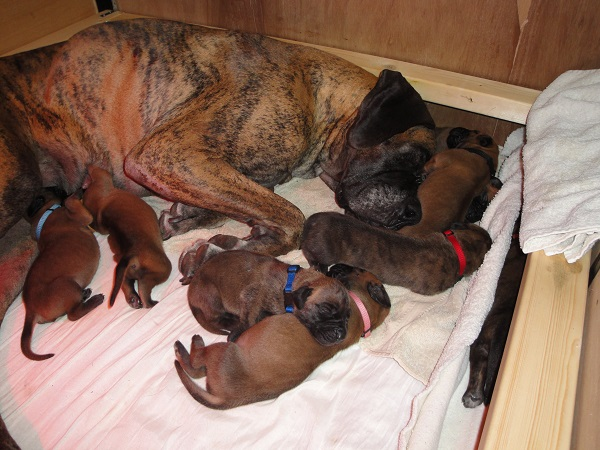 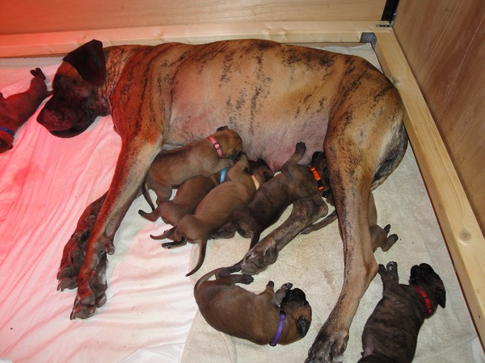 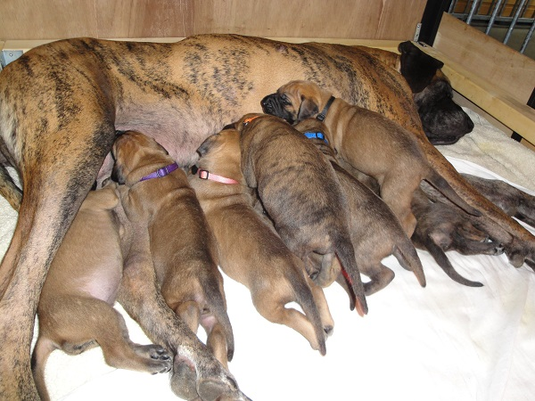 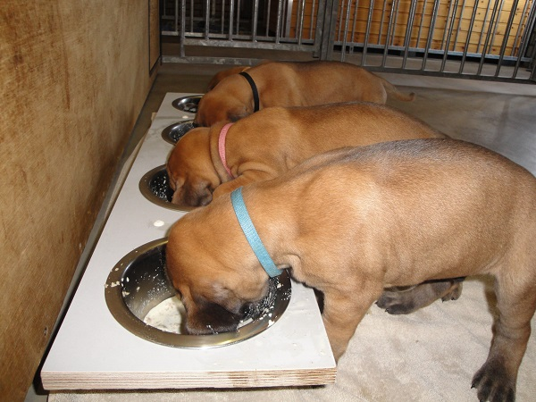 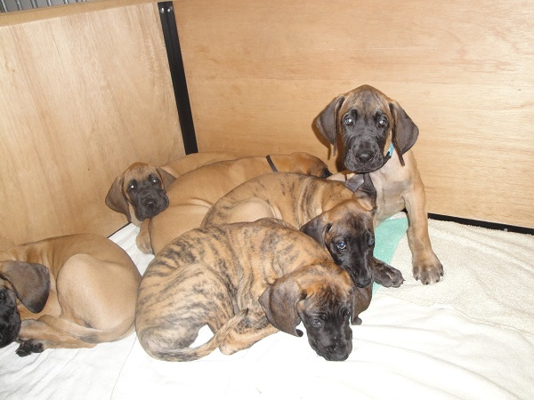 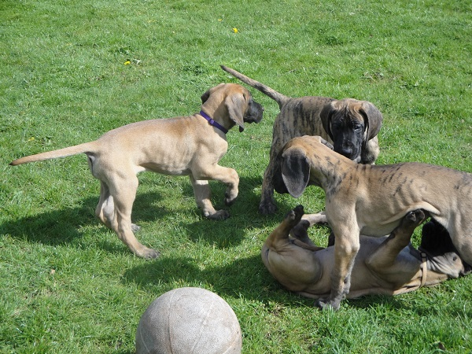 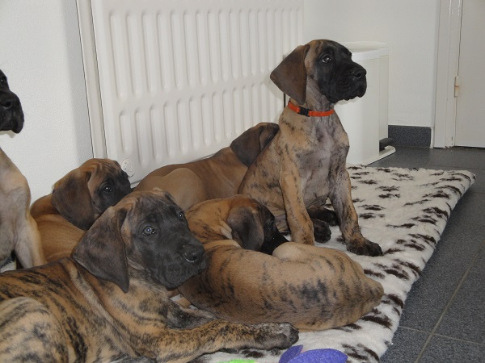 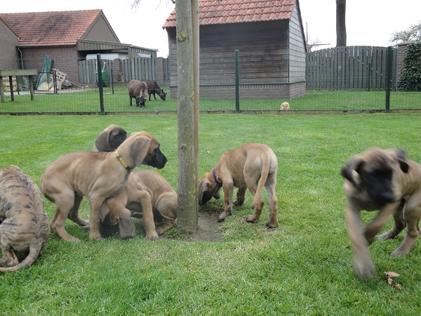 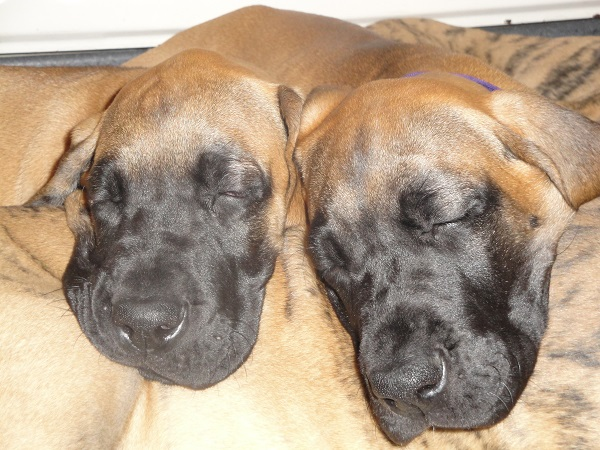 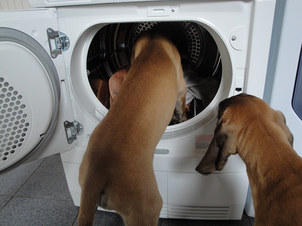 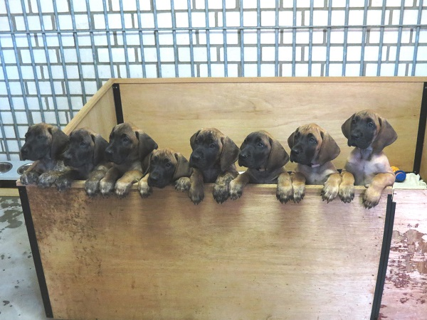
Een impressie van het A-nest op een leeftijd van 5 maanden (klik op de afbeelding voor een vergroting).